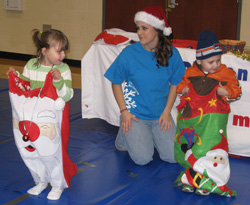

The Wish
Distance 4 Dreams works with A Special Wish Foundation to grant the wish of a child, from birth through age 20, that has been diagnosed with a life-threatening disorder. Everything is taken care of for the family providing for a wonderful, worry free week for the child receiving the wish and his or her family.
Through A Special Wish, the trip begins with a surprise limo pick-up from the airport in Orlando. This is only the beginning of an unforgettable week. Each day, the family visits various parks including Disney World, Sea World, and Universal Studios. The attractions don’t end when they leave the parks. Each family stays at Give Kids the World Village, possibly the only place more magical than Disney. The atmosphere here embodies the spirit of Winston Churchill’s quote, “We make a living by what we get; we make a life by what we give.” This includes Christmas every Thursday, ice cream at any waking hour of the day, a life-sized Candy Land game, and so much more.
D4D members are invited on the Saturday of Marathon weekend to join the family for an ice cream social. Before the social, members are given a tour of the villiage and get to see first hand the experience the family gets all week long. Feel free to ask any D4D member about their trip. The memories that were made will not soon be forgotten and the villiage is truly a child's dream come true.
The wishes that we have granted are the reason we exist; please take some time to meet the children who have touched our lives without even knowing it.